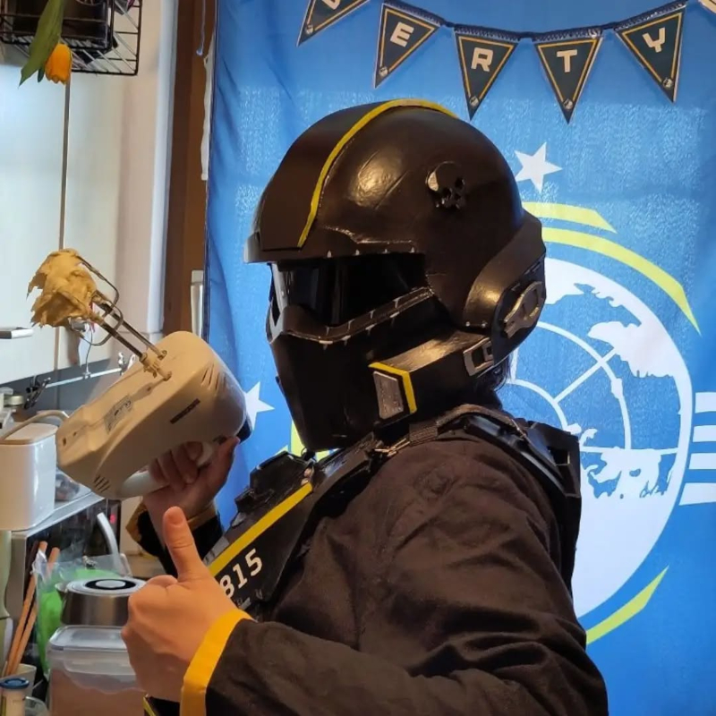
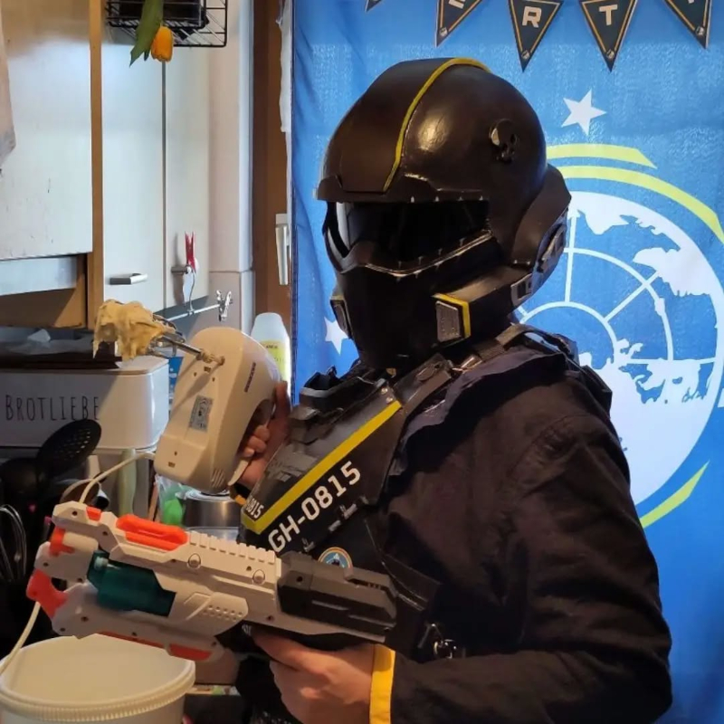
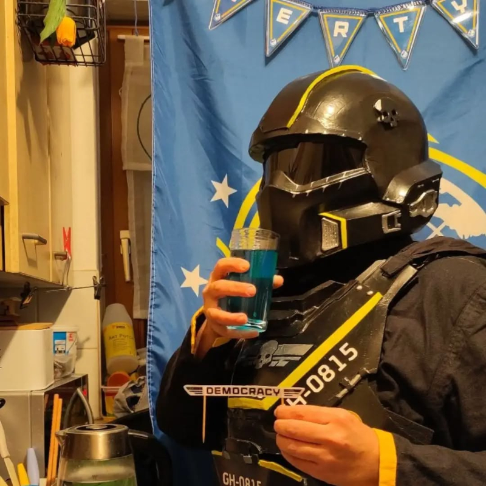
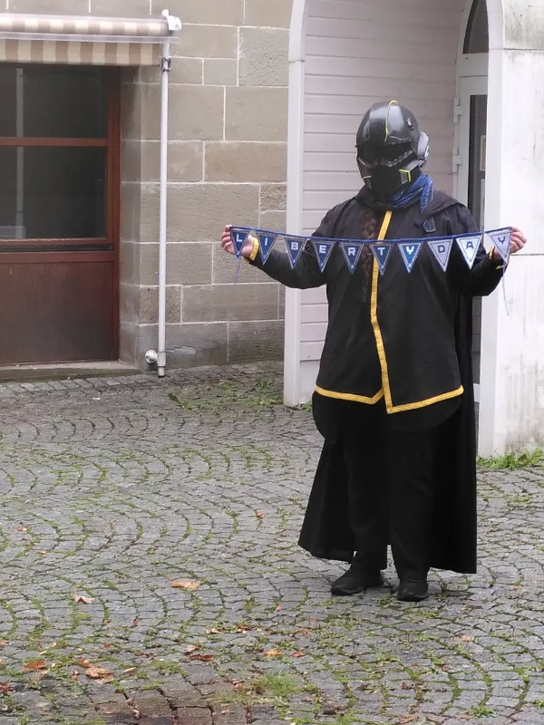
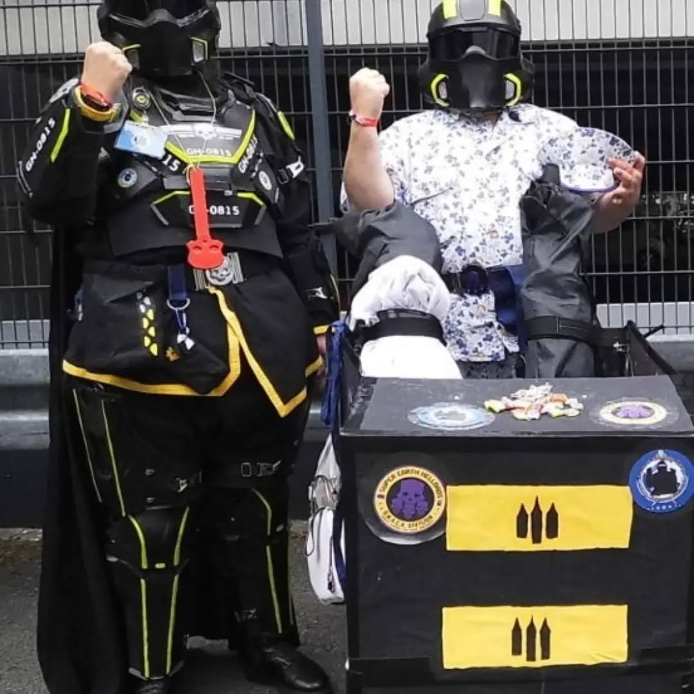
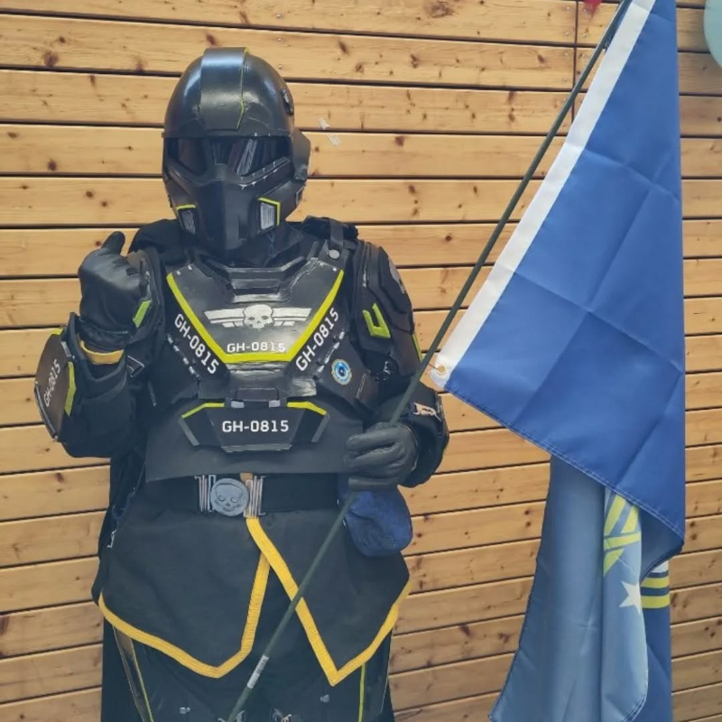

Sonntag, 22. November 2026
Kurzupdate: Nachträge zu 2025. Leider noch keine Überarbeitung der Website (irgendwas hat es auch leider zerbrochen, ich suche noch).
Eine unsichtbare Kategorie ist dazu gekommen, wer Sie findet bitte ned petzen gehen und für den privaten Gebrauch nutzen.
Ich muss die Bilder für den Helldiver noch runter laden. Sobald die da sind, werde ich diese entsprechend einfügen.
Nachtrag 26. Oktober 2026 - Liberty Day 2186
Demkoratischen Liberty Day 2026!



Nachtrag Oktober 2026
Fotos knipsen in Bad Überkingen für den Liberty Day 2186 (bzw. 2026). Dort das erste mal von Helldivers gehört. Leider ned mit Teil 1 angefangen aber im zweiten dann.

Nachtrag August 2026
GamesCon 2026 in Köln. Auch zu sehen: Schatz als El Presidente (Urlaubsdiver) mit Mr. Snack-Pack V1.0

Nachtrag Februar 2026
Weiteres Ausgehen mit GH-0815. Kennung kann man sich beim
German Helldiver Corps (Instagram) aussuchen, wenn man
mitmachen möchte. Das war beim Kinderfasching in nem Kaff. War lustig, jeder is aus dem Weg gegangen XD

Aber ich brauche andere Handschuhe...